Overview
StudyBuddy is a desktop application designed for students who wish to manage their module related tasks in a convenient and user-friendly interface. It is optimized for those who prefer to work with a Command Line Interface (CLI) but still contains some aspects of Graphical User Interface (GUI) which was written using JavaFX. The codebase is in Java and contains about 13kLoc.
Summary of contributions
Main Enhancements
Designed the Module Feature
-
Function: This optional feature enables users to view their tasks sorted according to the modules that they have taken. Each module is designed to contain a name, a unique module code, as well as all the tasks that it holds. Users can choose to assign their task to any module they want (or not at all), as well as create new modules, edit or delete any existing modules.
-
Justification: Given how college students have many, many task coming from multiple assignments, I believe this is one of the good way they can organise and view their tasks if they need to sift multiple tasks.
-
Highlights: One of the challenging features is to design something for tasks that do not have any modules assigned to them. All task by default will have a module attached to them, so we have to create a "figurehead" module for these tasks. This figurehead module have to be able to conceal its module code from the user and has to prevent users from edits and deletes.
Another difficulty is dealing with storage. To avoid changing the order of the tasks, module has to be designed to temporarily store tasks instead of actually storing it in the program.
Edit & Create Module Function
-
Function: These 2 features allows users to create new modules, as well as edit existing modules. Users cannot create any modules with duplicate names or code, or those with invalid module codes. In
edit mods, users can choose to edit name, code or even delete existing modules. -
Highlights: One key challenge with designing
edit modfunction is dealing with existing tasks is under the module. The program has to be designed to change the module of each consecutive task that was under the module, making this portion fragile.
Added Complete Function
-
Function: Allows users to set their task from pending to
Finished. -
Justification: To allow users to mark their task as complete so that it can be easily ignored /hidden by the user.
Minor Enhancements
Added 'modules' option in Edit function
-
Function: Allow users to edit change the module in which the task was assigned to.
-
Justification: So that users can edit and reassign task to a different existing module.
Team-based Tasks
-
Debugged a serious bug involving storage that was holding the entire team back for a week at the start of tP.
-
Help to refactor team’s code by creating parent class.
-
Helped repackaged some of the old codes into separate folders, as well as reorganizing
commandsandinteractivepromptsinto many folders -
Modified & cropped many of the team’s UG images for better readability.
-
Helped shorten some existing nested codes with
streams.
Review/Mentoring
-
Left constructive feedback on teammate’s repo.
-
Left feedback for another team’s DG. 59
-
Left feedback for another team’s UG. https://github.com/aegis-bot/ped/issues/4 [4]
User guide
Given below are sections I contributed to the User Guide. They showcase my ability to write documentation targeting end-users. |
User Interface Introduction
(Contributed by Yuting, Hong Wen & Teik Jun)
Study Buddy makes use of color schemes and animations to enhance your user experience.
Dashboard
The dashboard is the landing page each time the application is launched.
It consists of different components that can interact with you and provide you with meaningful information.
Navigation Menu Bar
The menu bar is located at the top of the dashboard and is primarily used for navigation.

Shortcuts are available for navigating to each page:
F1 - Modules
F3 - Statistics
F4 - Calendar
F5 - Productivity
F6 - StudyBuddy (All Tasks)
All Tasks Panel
By default, the All Tasks Panel lists all unarchived task tasks with their detailed information in the order of creation date and time.

Task Badges
To highlight Module code, Task Type and Task Status of each task in the All Tasks list , we use Badges.
- Module Badges
-
-
All in light steelblue.
-
If the task is not related to any module, the Module Badges will be omitted.
-
- Task Type Badges
-
-
Badges of different types are in different colours.
-
- Task Status
-
-
Badges of different status types are in different colours.
-
Tasks that are due within a week (i.e. 7 days) will be marked as
Due Soon. You may need to use the refresh command ([Refresh]) to refresh the status of all your tasks.
-
Tasks Due Soon Panel
The tasks that are due within a week (i.e. 7 days) will be listed here. You can jump to [Due Soon Tasks] to get more details.

Task Badges
To highlight the Weight & Module Code,
Time left for deadline and Task Type of each task in the Tasks Due Soon Panel , we use Badges.
- Weight & Module Code
-
-
All in steelblue.
-
Display the weight and module code of a task.
-
- Time left for deadline
-
-
All in light orange.
-
Display the time left for a tasks' deadline.
-
More information please refer to [Due Soon Tasks]
-
- Task Type Badges
-
-
Badges of different types are in different colors.
-
Interactive Prompt Box
The Interactive Prompt Box can be found at the bottom of the user interface.
To interact with Study Buddy, you can enter the desired command in the box with the words Please enter your command here…
and press enter to execute.
The reply from Study Buddy will be displayed in the box above.

| To get more detailed information about how to use Study Buddy, please refer to [Features]. |
This command is for you to mark a task as Finished.
Constraints
-
A Finished task cannot be marked as Finished again.
To done:
-
Key in
doneand press enter, you should get this prompt: Figure 5. Asks for task index.
Figure 5. Asks for task index. -
Now key in the index of the task you wish to complete.
-
Press enter again to confirm your change.
 Figure 6. Asks for confirmation
Figure 6. Asks for confirmation -
Task set to
Finishedsuccessfully! Note that the task in your task list has the tagFinished.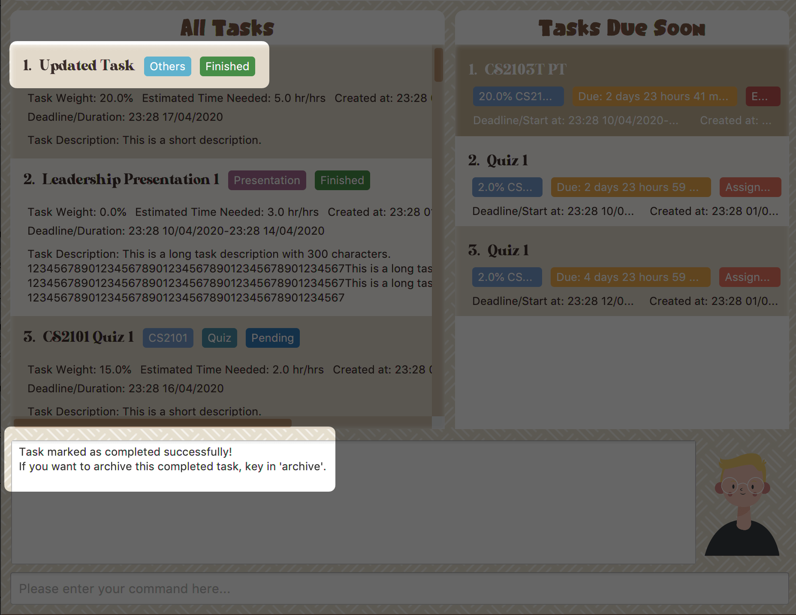Figure 7. Done result
You can choose to archive your completed task using the archive command.
Check more details from [Archive/ Unarchive].
=== Modules
(Contributed by Hong Wen)
|
The modules page organises your tasks into various modules. By default (i.e, when there is no module created), the modules page shows the following:
-
Overview. This tab shows all the modules you created.
-
No Module Allocated. This tab shows the list of tasks that has not yet been allocated to any module. By default, all tasks will show up here if you have not allocated any tasks to the modules.
 Figure 8. modules page
Figure 8. modules page
Navigation
- Navigate to modules page
-
-
To navigate to the modules page, click on
Modules→Show Modulesin the menu bar or press F1 in your keyboard. Figure 9. Modules dropdown menu
Figure 9. Modules dropdown menu
-
- Navigation in modules page
-
-
The clicking on the leftmost tab shows the
Overviewof all your modules. it displays the module’s name and their code. Figure 10. Module tab
Figure 10. Module tabOverview -
The rightmost tab shows the list of task that has not been allocated to any modules.
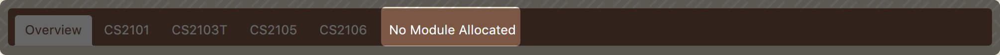Figure 11. Module tabNo Module Allocated -
The tabs in the middle are modules that you have added to the modules page.
 Figure 12. Module tab available modules
Figure 12. Module tab available modules
-
Functions
Create Modules
Study Buddy provides tow approaches for user to execute create module and edit module actions.
|
To start the interaction of creating a module, click on Modules→ Create in the menu bar.
Alternatively, you can key in create mods into the input line.

Constraints
-
Module Name
The name of this module cannot be the same as any existing modules. -
Module Code Format
-
The module code also need to be unique.
-
The module code should have a 2-3 letter prefix, a 4-digit number, followed by a single postfix.
-
Correct Module Code Examples
LSM1303
CS2040C
IS1103
MA1521 -
Incorrect Module Code Examples
CSSS1234 - Prefix is too long
C0001 - Prefix is too short
ZZ12345 - number is more than 4 digits
A1111XX - Postfix is too long
-
-
To Create Module:
-
Click on
Module→Createor key increate mods. A prompt will show up at the bottom of the screen.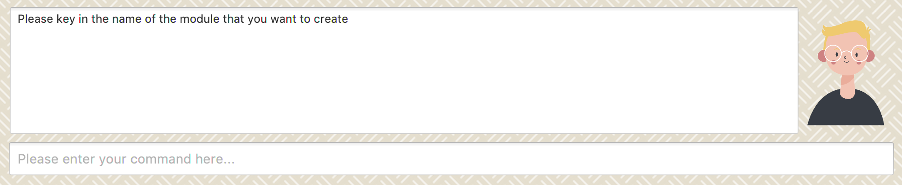Figure 14. Asks for module name -
Key in the name of your module.Here we use "New Module" as an example. Then Study Buddy will ask for the module code.
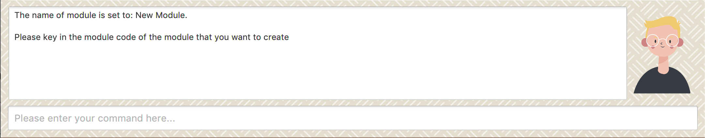Figure 15. Asks for module code -
Here we use "CSS1234" as an example.
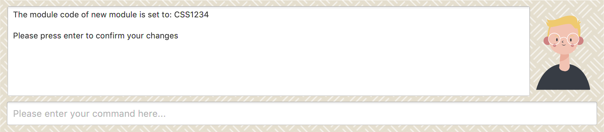Figure 16. Asks for confirmation -
Press enter to confirm, and the module page will update accordingly.
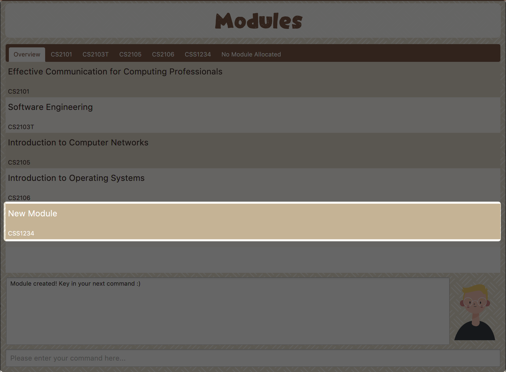Figure 17. New Module with code CSS1234 created.
Congratulations, you have added a module to your modules page!
Edit Modules
To start the interaction of editing a module, click on Modules→ Edit in the menu bar.
Alternatively, you can key in edit mods into the input line.

Study Buddy provides three module editing options.
- Edit options
-
-
Change Module name.
-
Change Module code.
-
Delete Module.
-
Constraints:
-
When choosing the module to edit, you need to provide a valid and existed module code.
-
When entering the value of new module name or new module code, you need to provide a different valid value.
-
The above "valid" judgment follows the same constraints as Create Modules.
To Edit Module:
-
Click on
Module→Editkey in edit mods. A prompt will show up to ask the module code of target module.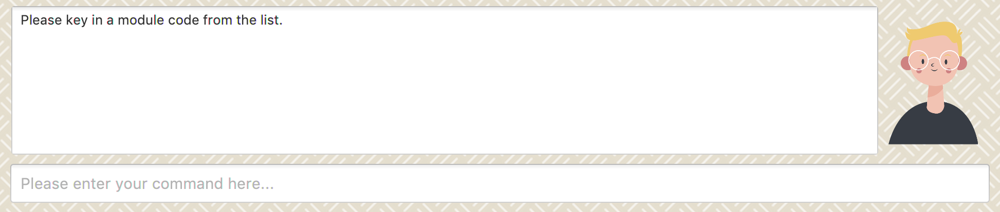Figure 19. Asks for module mode -
Key in the code of the module that you want to edit. Here we use "CSS1234" as an example. Then Study Buddy will ask for the edit option.
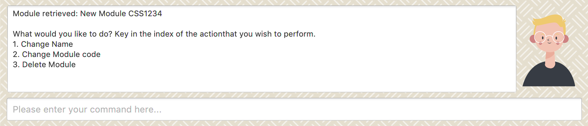Figure 20. Asks for edit option -
Key in the index of your option.
-
"1" → Change Module Name
Key in your new module name and press enter to confirm the editing. Here we use "Edited Module Name" as an example.
The module page will update accordingly.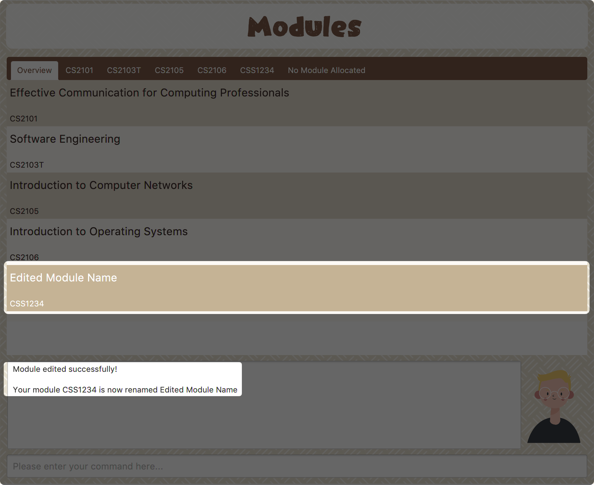Figure 21. Module name editing result -
"2" → Change Module Code
Key in your new module code and press enter to confirm the editing. Here we use "LY3000" as an example.
The module page will update accordingly. Figure 22. Module code editing result
Figure 22. Module code editing resultModule code changed!
-
"3" → Delete Module
After successfully deleting a module, the related tasks will also be affected. To delete the chosen module, you only need to press enter to confirmed the deletion. To better showcase the behaviour of deletion, here we use "CS2103T" as an example.
-
Before delete:
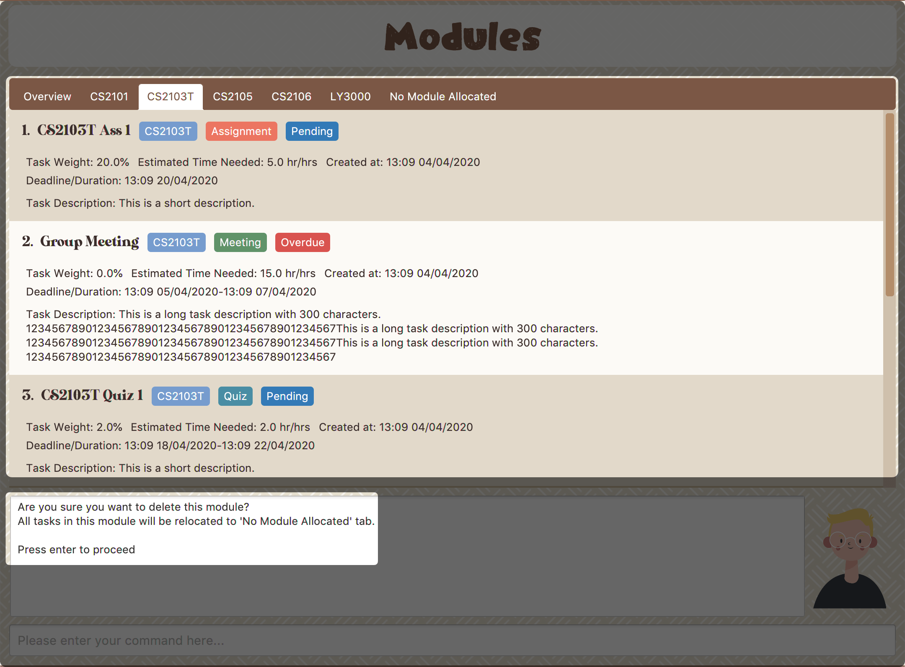Figure 23. Before delete -
After delete:
After successfully deleted target module, the module page will update accordingly and switch toOverviewpage.If you switch to
No Module Allocatedtab, you’ll find the tasks affected by this deletion (i.e. The tasks which belong to the deleted module).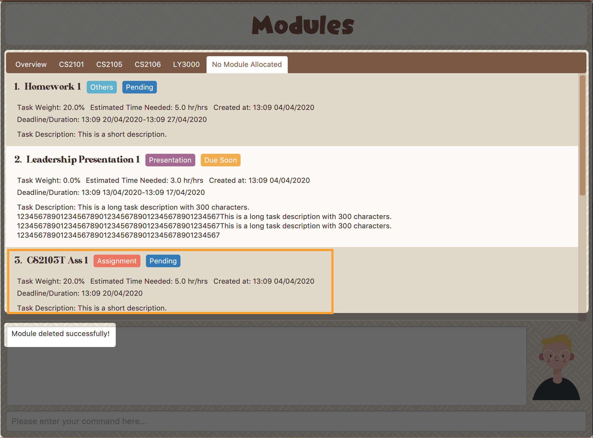Figure 24. Checking the affected tasks
-
-
Developer Guide
Given below are sections I contributed to the Developer Guide. They showcase my ability to write technical documentation and the technical depth of my contributions to the project. |
Architecture
The Architecture Diagram given above explains the high-level design of the App. Given below is a quick overview of each component.
Modules
(Contributed by Hong Wen)
The modules feature enables users to be able to group and view their tasks according to various modules or subjects.
Each module is assigned with a unique module code & a name.
By default, all task created with the add command will be be assigned to module code OO0000O.
Implementation
Modules are created with create mods Command and the program will request for a module name and module code. There are no restrictions on module name as long as it is not an empty entry.
Module codes however, require at least an alphabetical prefix, a number, and a postfix(optional).
Correct moduleCodes:
A0A
CS11X
AA1234
Incorrect moduleCodes:
123456
CAT
555TSequence diagram for creating modules
This is a sequence of how a module is created using the create mods feature. Take note that all interactions go through the CommandBox first in the UI, but it will be omitted from this diagram for simplicity.

-
When the user keys in
create modsor click Module/create on the menu bar, aCreateModuleInteractivePromptclass is created. It automatically constructs anEmptyModule. -
The interactivePrompt class will then change module attributes such as name and
ModuleCodeon according to user input. -
At the last stage, the prompt will construct a
CreateModCommandfor execution. It will go through the various layers in Model before returning to the prompt, which will then return to the user.
{bl}
| The lifeline for every member should end at the destroy marker (X) but due to a limitation of PlantUML, the lifeline reaches the end of diagram. {bl} |
-
Diagrams: